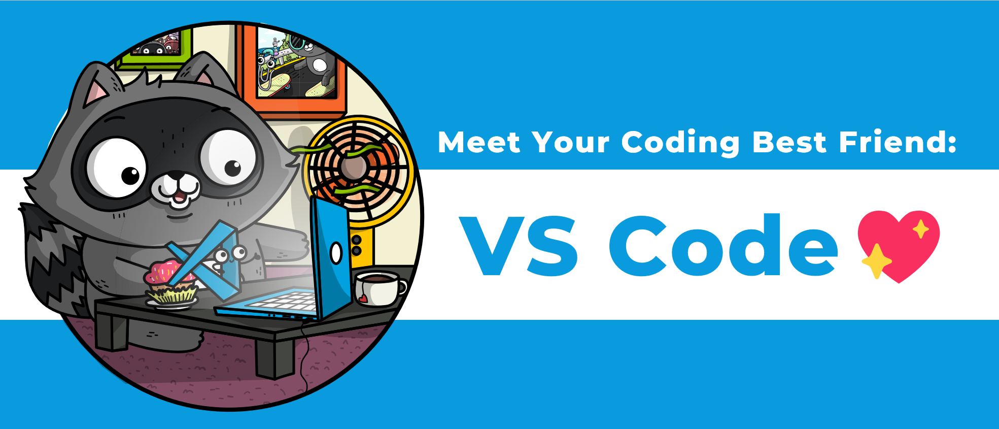

Meet your coding best friend: VS Code💖#

A hands-on tutorial on how to get the most out of the world’s most popular Python editor
Tutorial for SciPy 2023, 2023-07-10, 13:30–17:30 (America/Chicago), Classroom 103.

Visual Studio Code (VS Code) is a free code editor that runs on Windows, Linux, macOS and in your browser. This tutorial aims at Python programmers of all levels who are already using VS Code or are interested in doing so, and will take them from zero (installing VS Code) to a production setup for Python development. We will cover starter topics, such as customizing the UI and extensions, using code autocomplete, code navigation, debugging, and Jupyter Notebooks. We will also go into advanced use cases, such as remote development, pair programming via Live Share, Dev containers, GitHub Codespaces & more.
Tutorial schedule#
We end each section with a recap to go over everything we’ve covered and an opportunity to ask questions.
Time |
Duration |
Topic |
|---|---|---|
13:30 |
60 min |
|
14:30 |
10 min |
Break |
14:40 |
60 min |
|
15:40 |
10 min |
Break |
15:50 |
60 min |
|
16:50 |
10 min |
Break |
17:00 |
60 min |
Setup Instructions#
Option 1: Work on your computer#
Install local development environment
Variant A: Native installation
Note for Windows users: You may want to install WSL2 and install Git and Miniconda in the Linux subsystem.
Variant B: Use Linux containers. Just install Docker
Clone this repository:
git clone https://github.com/crazy4pi314/scipy-vscode-tutorialOpen the repository in VS Code
code scipy-vscode-tutorial(Docker only) With your repo open in VS Code, install the Development Container extension (if you don’t already have it) which will give you command pallet options to re-open the repo in a dev container.
You should now have the repository open in your local VS Code instance.
Option 2: Start instantly in your browser with GitHub Codespaces#
Create a free GitHub account if you don’t have one already
On the landing page of this repository, click on the green Code button, and then on the Codespaces tab to create a codespace.
After a short while you should have a VS Code window in your browser with the repository open.
This option gives you a fully functional VS Code environment (with some limitations), and should work on laptops and tablets alike.
Note: GitHub codespaces come with 120 core-hours and 15 GB-months for free for all GitHub accounts (180 core-hours for verified student accounts). By default, the container running your codespace will have 2 CPU cores, 4 GB of RAM, and 32 GB of local storage.
Option 3: Follow along on vscode.dev#
If neither option 1 nor 2 works for you, you can still shadow the presenters in a read-only LiveShare session in your web browser. Contrary to option 2 this does not require a GitHub account - all you need is a web browser.
We will share a https://vscode.dev/liveshare link at the start of the session. When opening the link, select “Continue on web” and “Continue as anonymous”.
Structure of this repository#
This repository contains a Dev Container setup that provides conda and mamba for setting up Python environments. This repo contains a sample Conda environment file (environment.yml), demo Jupyter notebook, and Dev Container configuration files that describe how a containerized development can be built for the repo. These configuration files work for both local Dev Containers as well as Codespaces, a GitHub-hosted cloud environment.
The Docker setup for the Dev Container starts with a miniconda image that then will install whatever conda environment file you have at the root of the repo. There are some additional configuration options in the comments of the Docker and devcontainer.json that have some examples of other steps you may want to add to your Dev Container, like what VS Code extensions to install when the container is launched.